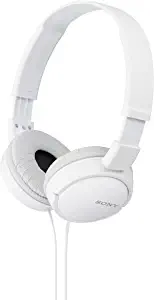
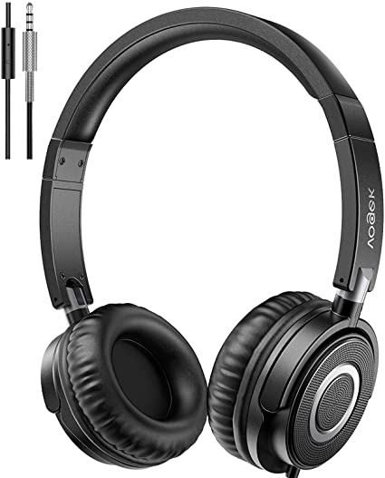
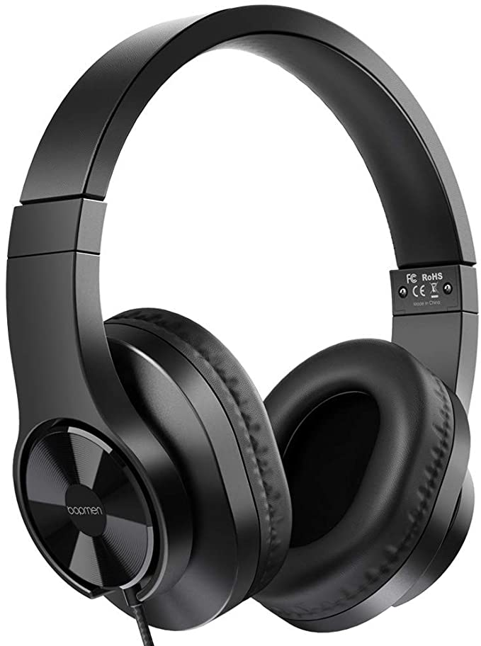
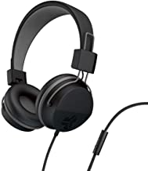

| products | Name | details | total |
|---|---|---|---|
|  | Sony ZX Series Wired On-Ear Headphones, | Connectivity Technology: Wired 30mm drivers for rich, full frequency response Lightweight and comfortable on-ear design Swivel-design for portability 47.25-inch (1.2 m) tangle-free, Y-type cord | ₹799 |
|  | Vogek Lightweight Foldable on Ear Headset | Hifi Stereo Sound and Built-in HD Microphone: 40 mm drivers can provide a dynamic, forward sound with impressive bass response, helping lose yourself in the music, no matter at home, school or travel. In-line microphone is convenient for hands-free calling, distanced learning and zoom meeting. (NOTE: microphone function do not support PC) |
₹850 |
|  | bopmen T3 Wired Over Ear Headphones | The wideband frequency range – spanning 20Hz to 20kHz – is designed for today’s bass-heavy music. The 20Hz low end of the frequency range picks up every powerful sub-bass note, while at the 20kHz high-end, you’ll be able to enjoy vocal melodies in outstanding clarity | ₹ 1331 |
|  | JLab Audio Neon Folding On-Ear Headphones | TANGLE FREE PLAYTIME: Hook up the tangle free, braided-nylon cord equipped with an in-line mic for taking calls, firing up your tunes, pausing them and controlling the tracks on your mix. The 90 degree jack rocks with all devices and cases. | ₹1127 |